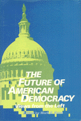

<body bgcolor="#FFFFFF" text="#000000" link="#0000FF" vlink="#CC0000" alink="#CC0000"><center><hr width="350" size="1" align="center" noshade>Is the space for democratic thought and action in America shrinking?<hr width="350" size="1" align="center" noshade><p><a href="https://cdcshoppingcart.uchicago.edu/Cart/ChicagoBook.aspx?ISBN=9780877222880&&PRESS=temple" target="_top">Buy this book!</a> | <a href="https://cdcshoppingcart.uchicago.edu/Cart/Cart.aspx?PRESS=temple" target="_top">View Cart</a> | <a href="https://cdcshoppingcart.uchicago.edu/Cart/Cart.aspx?PRESS=temple" target="_top">Check Out</a></p><p></p></center><!--none//--><h1>The Future of American Democracy</h1>
<H2>Views from the Left</H2>
<h3>edited by Mark E. Kann</h3>
<P>cloth 0-87722-288-6 $32.95, Feb 83, <FONT COLOR=#990033>Out of Print</FONT>
<br>paper 0-87722-289-4 $16.95, Feb 83, <FONT COLOR=#990033>Out of Print</FONT>
<BR> 320 pp
</P><BLOCKQUOTE><I>"An exceptionally thoughtful and wide ranging collection of essays by authors who are committed to defending and promoting the cause of democracy."</I>
<br>&#151<b>Sheldon S. Wolin</b>, Editor, <I>democracy</I><I></I></BLOCKQUOTE>
<p>Is the space for democratic thought and action in America shrinking? What can be done about it?
<p>Thirteen activists and scholars from the Left confront in this volume some of the long-range implications of Reaganomics and other assaults on democratic life. They question the ends and means of foreign relations and science, and look at the hidden assumptions behind such apparently democratic institutions as the family and the university.
<p>They ask about the consequences of American images. How have our political leaders used the bogey of communism? Do American perceptions of the individual or of the roles of men and women translate into democratic social relations?
<p>The writers are well known for their practical and theoretical statements about American democracy. The unusually open political campaigns of Tom Hayden and Fred Harris have attracted national attention. Robert Alfred, Peter Bachrach, Murray Edelman, Jane Flax, Edward Friedman, Donna J. Haraway, Robert Kargon, Bernard Magubane, and Charles Schwartz are some of the most prominent analysts of American society and the political process. All the essays take the long view: they draw from history and the present crisis to sketch what the future may hold.
<BR>&nbsp;<h2>Reviews</h2>
<p><I>"The expanded domain for the interpretation of democracy in American politics and society, coupled to the politically engaged stance of the authors, makes this collection of essays exciting."</I>
<br>&#151<b><I>The American Political Science Review</I></b>
<BR>&nbsp;<H2>About the Author(s)</H2>
<P><b>Mark E. Kann</b> is Associate Professor of Political Science at the University of Southern California. With John P. Diggins, he edited <I>The Problem of Authority in America</I>, also published by Temple.</P>
<BR><H2>Subject Categories</H2>
<p><A HREF="/tempress/political.html" TARGET="_top">Political Science and Public Policy</a>
</p>
<p align="center"><a href="https://cdcshoppingcart.uchicago.edu/Cart/ChicagoBook.aspx?ISBN=9780877222880&&PRESS=temple" target="_top">Buy this book!</a> | <a href="https://cdcshoppingcart.uchicago.edu/Cart/Cart.aspx?PRESS=temple" target="_top">View Cart</a> | <a href="https://cdcshoppingcart.uchicago.edu/Cart/Cart.aspx?PRESS=temple" target="_top">Check Out</a></p><p><font face="Arial" size="1"><a href="copyright.html" onMouseOver="window.status='Web Copyright Policy';return true;" onMouseOut="window.status=''" title="Web Copyright Policy">&copy;</a> 2015 <a href="http://www.temple.edu" target="new" onMouseOver="window.status='Link to Temple University home page';return true;" onMouseOut="window.status=''" title="Link to Temple University home page">Temple University</a>. All Rights Reserved. http://www.temple.edu/tempress/titles/288_reg.html</font></p>